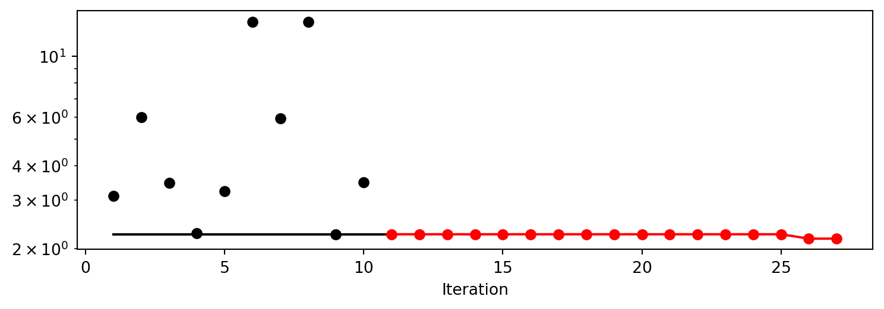
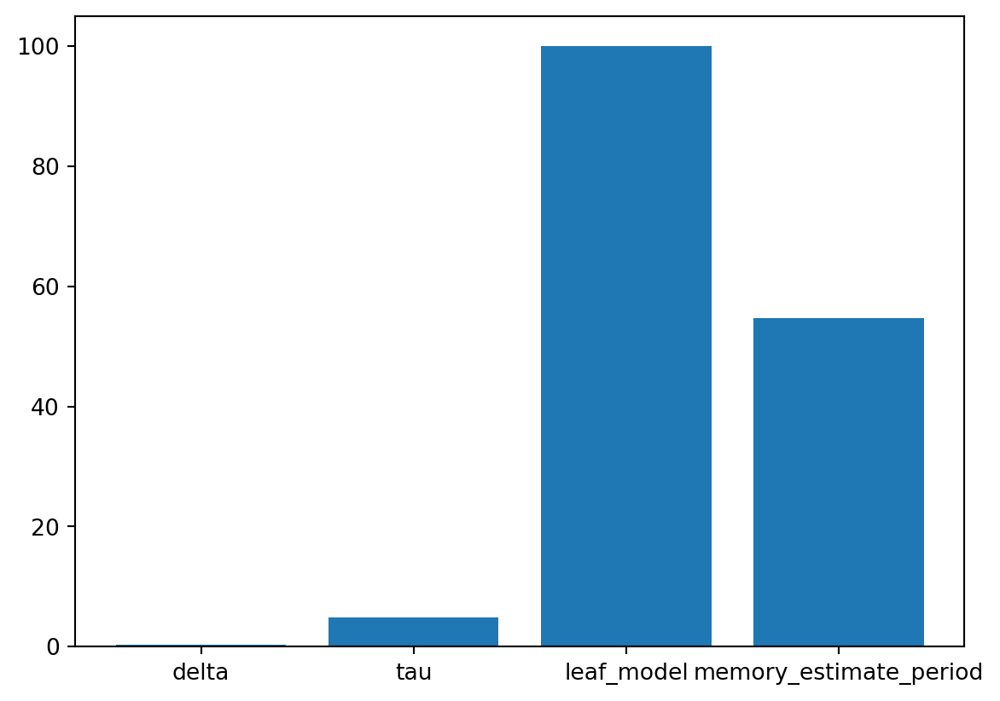

from river.datasets import synth
import pandas as pd
import numpy as np
from spotRiver.utils.data_conversion import convert_to_df
seed = 123
shuffle = True
n_train = 6_000
n_test = 4_000
n_samples = n_train + n_test
target_column = "y"
dataset = synth.FriedmanDrift(
drift_type='gra',
position=(n_train/4, n_train/2),
seed=123
)
train = convert_to_df(dataset, n_total=n_train)
train.columns = [f"x{i}" for i in range(1, 11)] + [target_column]
dataset = synth.FriedmanDrift(
drift_type='gra',
position=(n_test/4, n_test/2),
seed=123
)
test = convert_to_df(dataset, n_total=n_test)
test.columns = [f"x{i}" for i in range(1, 11)] + [target_column]22 ’river Hyperparameter Tuning: Hoeffding Adaptive Tree Regressor with Friedman Drift Data
This chapter demonstrates hyperparameter tuning for river’s Hoeffding Adaptive Tree Regressor with the Friedman drift data set [SOURCE]. The Hoeffding Adaptive Tree Regressor is a decision tree that uses the Hoeffding bound to limit the number of splits evaluated at each node. The Hoeffding Adaptive Tree Regressor is a regression tree, i.e., it predicts a real value for each sample. The Hoeffding Adaptive Tree Regressor is a drift aware model, i.e., it can handle concept drifts.
22.1 The Friedman Drift Data Set
We will use the Friedman synthetic dataset with concept drifts, which is described in detail in Section E.1. The following parameters are used to generate and handle the data set:
- horizon: The prediction horizon in hours.
- n_samples: The number of samples in the data set.
- p_1: The position of the first concept drift.
- p_2: The position of the second concept drift.
- position: The position of the concept drifts.
- n_train: The number of samples used for training.
We will use spotRiver’s convert_to_df function [SOURCE] to convert the river data set to a pandas data frame. Then we add column names x1 until x10 to the first 10 columns of the dataframe and the column name y to the last column of the dataframe.
22.2 Setup
Before we consider the detailed experimental setup, we select the parameters that affect run time, initial design size, size of the data set, and the experiment name.
MAX_TIME: The maximum run time in seconds for the hyperparameter tuning process.INIT_SIZE: The initial design size for the hyperparameter tuning process.PREFIX: The prefix for the experiment name.
Caution: Run time and initial design size should be increased for real experiments
MAX_TIMEis set to one minute for demonstration purposes. For real experiments, this should be increased to at least 1 hour.INIT_SIZEis set to 5 for demonstration purposes. For real experiments, this should be increased to at least 10.
The oml_grace_period defines the number of observations that are used for the initial training of the model.
The weight_coeff defines a multiplier for the results: results are multiplied by (step/n_steps)**weight_coeff, where n_steps is the total number of iterations. Results from the beginning have a lower weight than results from the end if weight_coeff > 1. If weight_coeff == 0, all results have equal weight. Note, that the weight_coeff is only used internally for the tuner and does not affect the results that are used for the evaluation or comparisons.
The weights provide a flexible way to define specific requirements, e.g., if the memory is more important than the time, the weight for the memory can be increased.
The TENSORBOARD_CLEAN argument is set to True to archive the TensorBoard folder if it already exists. This is useful if you want to start a hyperparameter tuning process from scratch. If you want to continue a hyperparameter tuning process, set TENSORBOARD_CLEAN to False. Then the TensorBoard folder will not be archived and the old and new TensorBoard files will shown in the TensorBoard dashboard.
22.3 SelectSelect Model (algorithm) and core_model_hyper_dict
spotPython hyperparameter tuning approach uses two components:
- a model (class) and
- an associated hyperparameter dictionary.
Here, the river model class HoeffdingAdaptiveTreeRegressor [SOURCE] is selected.
The corresponding hyperparameters are loaded from the associated dictionary, which is stored as a JSON file [SOURCE]. The JSON file contains hyperparameter type information, names, and bounds.
The method add_core_model_to_fun_control adds the model and the hyperparameter dictionary to the fun_control dictionary.
Alternatively, you can load a local hyper_dict. Simply set river_hyper_dict.json as the filename. If filenameis set to None, which is the default, the hyper_dict [SOURCE] is loaded from the spotRiver package.
We use the StandardScaler [SOURCE] from river as the preprocessing model. The StandardScaler is used to standardize the data set, i.e., it has zero mean and unit variance.
22.4 Objective Function
22.4.1 The Objective Function
The objective function fun_oml_horizon [SOURCE] is selected next.
22.5 Selection of the Objective (Loss) Function
The metric_sklearn is used for the sklearn based evaluation via eval_oml_horizon [SOURCE]. Here we use the mean_absolute_error [SOURCE] as the objective function.
Note: Additional metrics
spotRiver also supports additional metrics. For example, the metric_river is used for the river based evaluation via eval_oml_iter_progressive [SOURCE]. The metric_river is implemented to simulate the behaviour of the “original” river metrics.
spotRiver provides information about the model’ s score (metric), memory, and time. The hyperparamter tuner requires a single objective. Therefore, a weighted sum of the metric, memory, and time is computed. The weights are defined in the weights array.
Note: Weights
The weights provide a flexible way to define specific requirements, e.g., if the memory is more important than the time, the weight for the memory can be increased.
The oml_grace_period defines the number of observations that are used for the initial training of the model. The step defines the iteration number at which to yield results. This only takes into account the predictions, and not the training steps. The weight_coeff defines a multiplier for the results: results are multiplied by (step/n_steps)**weight_coeff, where n_steps is the total number of iterations. Results from the beginning have a lower weight than results from the end if weight_coeff > 1. If weight_coeff == 0, all results have equal weight. Note, that the weight_coeff is only used internally for the tuner and does not affect the results that are used for the evaluation or comparisons.
from spotPython.utils.init import fun_control_init, design_control_init, surrogate_control_init, optimizer_control_init
from spotRiver.fun.hyperriver import HyperRiver
from spotRiver.hyperdict.river_hyper_dict import RiverHyperDict
# experiment setup
PREFIX = "024"
fun_evals = inf
max_time = 1
init_size = 10
# evaluation setup
horizon = 7*24
metric_sklearn_name = "mean_absolute_error"
oml_grace_period = horizon
weight_coeff = 1.0
weights = np.array([1, 0.01, 0.01])
fun = HyperRiver().fun_oml_horizon
# data preparation
prep_model_name = "StandardScaler"
# model setup
core_model_name = "tree.HoeffdingAdaptiveTreeRegressor"
# core_model_name = "tree.HoeffdingTreeRegressor"
hyperdict = RiverHyperDict
fun_control = fun_control_init(
PREFIX=PREFIX,
TENSORBOARD_CLEAN=True,
core_model_name=core_model_name,
fun_evals=fun_evals,
horizon=horizon,
hyperdict=hyperdict,
max_time=max_time,
metric_sklearn_name=metric_sklearn_name,
noise=True,
oml_grace_period=oml_grace_period,
prep_model_name=prep_model_name,
seed=seed,
target_column=target_column,
test=test,
train=train,
weight_coeff=weight_coeff,
weights=weights,)
design_control = design_control_init(
init_size=init_size,
)
surrogate_control = surrogate_control_init(
noise=True,
n_theta=2,
min_Lambda=1e-3,
max_Lambda=10,
)
optimizer_control = optimizer_control_init()Moving TENSORBOARD_PATH: runs/ to TENSORBOARD_PATH_OLD: runs_OLD/runs_2024_06_20_09_20_31
Created spot_tensorboard_path: runs/spot_logs/024_p040025_2024-06-20_09-20-31 for SummaryWriter()# from spotPython.hyperparameters.values import modify_hyper_parameter_levels
# levels = ["LinearRegression"]
# modify_hyper_parameter_levels(fun_control, "leaf_model", levels)from spotPython.utils.eda import gen_design_table
from spotPython.spot import spot
print(gen_design_table(fun_control))| name | type | default | lower | upper | transform |
|------------------------|--------|------------------|---------|----------|------------------------|
| grace_period | int | 200 | 10 | 1000 | None |
| max_depth | int | 20 | 2 | 20 | transform_power_2_int |
| delta | float | 1e-07 | 1e-08 | 1e-06 | None |
| tau | float | 0.05 | 0.01 | 0.1 | None |
| leaf_prediction | factor | mean | 0 | 2 | None |
| leaf_model | factor | LinearRegression | 0 | 2 | None |
| model_selector_decay | float | 0.95 | 0.9 | 0.99 | None |
| splitter | factor | EBSTSplitter | 0 | 2 | None |
| min_samples_split | int | 5 | 2 | 10 | None |
| bootstrap_sampling | factor | 0 | 0 | 1 | None |
| drift_window_threshold | int | 300 | 100 | 500 | None |
| switch_significance | float | 0.05 | 0.01 | 0.1 | None |
| binary_split | factor | 0 | 0 | 1 | None |
| max_size | float | 500.0 | 100 | 1000 | None |
| memory_estimate_period | int | 6 | 3 | 8 | transform_power_10_int |
| stop_mem_management | factor | 0 | 0 | 1 | None |
| remove_poor_attrs | factor | 0 | 0 | 1 | None |
| merit_preprune | factor | 1 | 0 | 1 | None |22.5.1 Run the Spot Optimizer
The class Spot [SOURCE] is the hyperparameter tuning workhorse. It is initialized with the following parameters:
fun: the objective functionfun_control: the dictionary with the control parameters for the objective functiondesign: the experimental designdesign_control: the dictionary with the control parameters for the experimental designsurrogate: the surrogate modelsurrogate_control: the dictionary with the control parameters for the surrogate modeloptimizer: the optimizeroptimizer_control: the dictionary with the control parameters for the optimizer
Note: Total run time
The total run time may exceed the specified max_time, because the initial design (here: init_size = INIT_SIZE as specified above) is always evaluated, even if this takes longer than max_time.
spot_tuner = spot.Spot(
fun=fun,
fun_control=fun_control,
design_control=design_control,
surrogate_control=surrogate_control,
optimizer_control=optimizer_control,
)
res = spot_tuner.run()spotPython tuning: 2.2515055392695573 [----------] 4.81%
spotPython tuning: 2.2515055392695573 [#---------] 6.79%
spotPython tuning: 2.2515055392695573 [#---------] 10.75%
spotPython tuning: 2.2515055392695573 [#---------] 12.66%
spotPython tuning: 2.2515055392695573 [##--------] 19.86%
spotPython tuning: 2.2515055392695573 [##--------] 22.06%
spotPython tuning: 2.2515055392695573 [##--------] 24.09%
spotPython tuning: 2.2515055392695573 [###-------] 27.09%
spotPython tuning: 2.2515055392695573 [###-------] 31.53%
spotPython tuning: 2.2515055392695573 [###-------] 34.87%
spotPython tuning: 2.2515055392695573 [####------] 37.89%
spotPython tuning: 2.2515055392695573 [#####-----] 51.60%
spotPython tuning: 2.2515055392695573 [######----] 62.06%
spotPython tuning: 2.2515055392695573 [#######---] 67.36%
spotPython tuning: 2.2515055392695573 [########--] 80.10%
spotPython tuning: 2.1705886575489273 [##########] 96.05%
spotPython tuning: 2.1705886575489273 [##########] 100.00% Done...
22.6 Results
22.6.1 TensorBoard
Now we can start TensorBoard in the background with the following command, where ./runs is the default directory for the TensorBoard log files:
tensorboard --logdir="./runs":::{.callout-tip} #### Tip: TENSORBOARD_PATH The TensorBoard path can be printed with the following command:
from spotPython.utils.init import get_tensorboard_path
get_tensorboard_path(fun_control)'runs/'spot_tuner.print_results(print_screen=False)[['grace_period', 369.0],
['max_depth', 10.0],
['delta', 2.687369912822594e-07],
['tau', 0.03965702590085796],
['leaf_prediction', 1.0],
['leaf_model', 0.0],
['model_selector_decay', 0.912608961480265],
['splitter', 2.0],
['min_samples_split', 5.0],
['bootstrap_sampling', 0.0],
['drift_window_threshold', 256.0],
['switch_significance', 0.010066722690551406],
['binary_split', 0.0],
['max_size', 714.4837650420958],
['memory_estimate_period', 6.0],
['stop_mem_management', 0.0],
['remove_poor_attrs', 0.0],
['merit_preprune', 1.0]]The tuned hyperparameters can be obtained as a dictionary with the following command:
from spotPython.hyperparameters.values import get_tuned_hyperparameters
get_tuned_hyperparameters(spot_tuner, fun_control){'grace_period': 369.0,
'max_depth': 10.0,
'delta': 2.687369912822594e-07,
'tau': 0.03965702590085796,
'leaf_prediction': 'model',
'leaf_model': 'LinearRegression',
'model_selector_decay': 0.912608961480265,
'splitter': 'QOSplitter',
'min_samples_split': 5.0,
'bootstrap_sampling': 0,
'drift_window_threshold': 256.0,
'switch_significance': 0.010066722690551406,
'binary_split': 0,
'max_size': 714.4837650420958,
'memory_estimate_period': 6.0,
'stop_mem_management': 0,
'remove_poor_attrs': 0,
'merit_preprune': 1}The results can be saved and reloaded with the following commands:
from spotPython.utils.file import save_pickle, load_pickle
from spotPython.utils.init import get_experiment_name
experiment_name = get_experiment_name(PREFIX)
SAVE_AND_LOAD = False
if SAVE_AND_LOAD == True:
save_pickle(spot_tuner, experiment_name)
spot_tuner = load_pickle(experiment_name)After the hyperparameter tuning run is finished, the progress of the hyperparameter tuning can be visualized. The black points represent the performace values (score or metric) of hyperparameter configurations from the initial design, whereas the red points represents the hyperparameter configurations found by the surrogate model based optimization.
spot_tuner.plot_progress(log_y=True, filename=None)
Results can also be printed in tabular form.
print(gen_design_table(fun_control=fun_control, spot=spot_tuner))| name | type | default | lower | upper | tuned | transform | importance | stars |
|------------------------|--------|------------------|---------|---------|-----------------------|------------------------|--------------|---------|
| grace_period | int | 200 | 10.0 | 1000.0 | 369.0 | None | 0.01 | |
| max_depth | int | 20 | 2.0 | 20.0 | 10.0 | transform_power_2_int | 3.06 | * |
| delta | float | 1e-07 | 1e-08 | 1e-06 | 2.687369912822594e-07 | None | 0.81 | . |
| tau | float | 0.05 | 0.01 | 0.1 | 0.03965702590085796 | None | 0.01 | |
| leaf_prediction | factor | mean | 0.0 | 2.0 | model | None | 0.01 | |
| leaf_model | factor | LinearRegression | 0.0 | 2.0 | LinearRegression | None | 88.04 | ** |
| model_selector_decay | float | 0.95 | 0.9 | 0.99 | 0.912608961480265 | None | 0.49 | . |
| splitter | factor | EBSTSplitter | 0.0 | 2.0 | QOSplitter | None | 0.01 | |
| min_samples_split | int | 5 | 2.0 | 10.0 | 5.0 | None | 40.60 | * |
| bootstrap_sampling | factor | 0 | 0.0 | 1.0 | 0 | None | 0.08 | |
| drift_window_threshold | int | 300 | 100.0 | 500.0 | 256.0 | None | 0.36 | . |
| switch_significance | float | 0.05 | 0.01 | 0.1 | 0.010066722690551406 | None | 100.00 | *** |
| binary_split | factor | 0 | 0.0 | 1.0 | 0 | None | 4.65 | * |
| max_size | float | 500.0 | 100.0 | 1000.0 | 714.4837650420958 | None | 13.23 | * |
| memory_estimate_period | int | 6 | 3.0 | 8.0 | 6.0 | transform_power_10_int | 0.38 | . |
| stop_mem_management | factor | 0 | 0.0 | 1.0 | 0 | None | 1.03 | * |
| remove_poor_attrs | factor | 0 | 0.0 | 1.0 | 0 | None | 0.21 | . |
| merit_preprune | factor | 1 | 0.0 | 1.0 | 1 | None | 0.10 | |A histogram can be used to visualize the most important hyperparameters.
spot_tuner.plot_importance(threshold=0.1)
22.7 Get Default Hyperparameters
The default hyperparameters, which will be used for a comparion with the tuned hyperparameters, can be obtained with the following commands:
from spotPython.hyperparameters.values import get_one_core_model_from_X
from spotPython.hyperparameters.values import get_default_hyperparameters_as_array
X_start = get_default_hyperparameters_as_array(fun_control)
model_default = get_one_core_model_from_X(X_start, fun_control, default=True)
model_defaultHoeffdingAdaptiveTreeRegressor
HoeffdingAdaptiveTreeRegressor (
grace_period=200
max_depth=1048576
delta=1e-07
tau=0.05
leaf_prediction="mean"
leaf_model=LinearRegression (
optimizer=SGD (
lr=Constant (
learning_rate=0.01
)
)
loss=Squared ()
l2=0.
l1=0.
intercept_init=0.
intercept_lr=Constant (
learning_rate=0.01
)
clip_gradient=1e+12
initializer=Zeros ()
)
model_selector_decay=0.95
nominal_attributes=None
splitter=EBSTSplitter ()
min_samples_split=5
bootstrap_sampling=0
drift_window_threshold=300
drift_detector=ADWIN (
delta=0.002
clock=32
max_buckets=5
min_window_length=5
grace_period=10
)
switch_significance=0.05
binary_split=0
max_size=500.
memory_estimate_period=1000000
stop_mem_management=0
remove_poor_attrs=0
merit_preprune=1
seed=None
)
Note:
spotPython tunes numpy arrays
spotPythontunes numpy arrays, i.e., the hyperparameters are stored in a numpy array.
The model with the default hyperparameters can be trained and evaluated with the following commands:
from spotRiver.evaluation.eval_bml import eval_oml_horizon
df_eval_default, df_true_default = eval_oml_horizon(
model=model_default,
train=fun_control["train"],
test=fun_control["test"],
target_column=fun_control["target_column"],
horizon=fun_control["horizon"],
oml_grace_period=fun_control["oml_grace_period"],
metric=fun_control["metric_sklearn"],
)The three performance criteria, i.e., score (metric), runtime, and memory consumption, can be visualized with the following commands:
from spotRiver.evaluation.eval_bml import plot_bml_oml_horizon_metrics, plot_bml_oml_horizon_predictions
df_labels=["default"]
plot_bml_oml_horizon_metrics(df_eval = [df_eval_default], log_y=False, df_labels=df_labels, metric=fun_control["metric_sklearn"])
22.7.1 Show Predictions
- Select a subset of the data set for the visualization of the predictions:
- We use the mean, \(m\), of the data set as the center of the visualization.
- We use 100 data points, i.e., \(m \pm 50\) as the visualization window.
m = fun_control["test"].shape[0]
a = int(m/2)-50
b = int(m/2)+50
plot_bml_oml_horizon_predictions(df_true = [df_true_default[a:b]], target_column=target_column, df_labels=df_labels)
22.8 Get SPOT Results
In a similar way, we can obtain the hyperparameters found by spotPython.
from spotPython.hyperparameters.values import get_one_core_model_from_X
X = spot_tuner.to_all_dim(spot_tuner.min_X.reshape(1,-1))
model_spot = get_one_core_model_from_X(X, fun_control)df_eval_spot, df_true_spot = eval_oml_horizon(
model=model_spot,
train=fun_control["train"],
test=fun_control["test"],
target_column=fun_control["target_column"],
horizon=fun_control["horizon"],
oml_grace_period=fun_control["oml_grace_period"],
metric=fun_control["metric_sklearn"],
)df_labels=["default", "spot"]
plot_bml_oml_horizon_metrics(df_eval = [df_eval_default, df_eval_spot], log_y=False, df_labels=df_labels, metric=fun_control["metric_sklearn"])
plot_bml_oml_horizon_predictions(df_true = [df_true_default[a:b], df_true_spot[a:b]], target_column=target_column, df_labels=df_labels)
from spotPython.plot.validation import plot_actual_vs_predicted
plot_actual_vs_predicted(y_test=df_true_default[target_column], y_pred=df_true_default["Prediction"], title="Default")
plot_actual_vs_predicted(y_test=df_true_spot[target_column], y_pred=df_true_spot["Prediction"], title="SPOT")

22.9 Visualize Regression Trees
dataset_f = dataset.take(n_samples)
print(f"n_samples: {n_samples}")
for x, y in dataset_f:
model_default.learn_one(x, y)n_samples: 10000
Caution: Large Trees
- Since the trees are large, the visualization is suppressed by default.
- To visualize the trees, uncomment the following line.
# model_default.draw()model_default.summary{'n_nodes': 45,
'n_branches': 22,
'n_leaves': 23,
'n_active_leaves': 37,
'n_inactive_leaves': 0,
'height': 9,
'total_observed_weight': 14168.0,
'n_alternate_trees': 4,
'n_pruned_alternate_trees': 2,
'n_switch_alternate_trees': 0}22.9.1 Spot Model
print(f"n_samples: {n_samples}")
dataset_f = dataset.take(n_samples)
for x, y in dataset_f:
model_spot.learn_one(x, y)n_samples: 10000
Caution: Large Trees
- Since the trees are large, the visualization is suppressed by default.
- To visualize the trees, uncomment the following line.
# model_spot.draw()model_spot.summary{'n_nodes': 29,
'n_branches': 14,
'n_leaves': 15,
'n_active_leaves': 25,
'n_inactive_leaves': 0,
'height': 6,
'total_observed_weight': 14168.0,
'n_alternate_trees': 2,
'n_pruned_alternate_trees': 1,
'n_switch_alternate_trees': 0}from spotPython.utils.eda import compare_two_tree_models
print(compare_two_tree_models(model_default, model_spot))| Parameter | Default | Spot |
|--------------------------|-----------|--------|
| n_nodes | 45 | 29 |
| n_branches | 22 | 14 |
| n_leaves | 23 | 15 |
| n_active_leaves | 37 | 25 |
| n_inactive_leaves | 0 | 0 |
| height | 9 | 6 |
| total_observed_weight | 14168 | 14168 |
| n_alternate_trees | 4 | 2 |
| n_pruned_alternate_trees | 2 | 1 |
| n_switch_alternate_trees | 0 | 0 |22.10 Detailed Hyperparameter Plots
spot_tuner.plot_important_hyperparameter_contour(max_imp=3)grace_period: 0.012979653692767656
max_depth: 3.0623098845010905
delta: 0.8100481957993316
tau: 0.01063074696818744
leaf_prediction: 0.011475632052363604
leaf_model: 88.04046585729799
model_selector_decay: 0.48614764609530275
splitter: 0.005281501955129357
min_samples_split: 40.596330479806255
bootstrap_sampling: 0.08001190716795156
drift_window_threshold: 0.3630873300946414
switch_significance: 100.00000000000001
binary_split: 4.652177379444421
max_size: 13.226178756977435
memory_estimate_period: 0.3834888848491832
stop_mem_management: 1.0277817085904979
remove_poor_attrs: 0.20515177565005707
merit_preprune: 0.09749696977839173
impo: [['grace_period', 0.012979653692767656], ['max_depth', 3.0623098845010905], ['delta', 0.8100481957993316], ['tau', 0.01063074696818744], ['leaf_prediction', 0.011475632052363604], ['leaf_model', 88.04046585729799], ['model_selector_decay', 0.48614764609530275], ['splitter', 0.005281501955129357], ['min_samples_split', 40.596330479806255], ['bootstrap_sampling', 0.08001190716795156], ['drift_window_threshold', 0.3630873300946414], ['switch_significance', 100.00000000000001], ['binary_split', 4.652177379444421], ['max_size', 13.226178756977435], ['memory_estimate_period', 0.3834888848491832], ['stop_mem_management', 1.0277817085904979], ['remove_poor_attrs', 0.20515177565005707], ['merit_preprune', 0.09749696977839173]]
indices: [11, 5, 8, 13, 12, 1, 15, 2, 6, 14, 10, 16, 17, 9, 0, 4, 3, 7]
indices after max_imp selection: [11, 5, 8]


22.11 Parallel Coordinates Plots
spot_tuner.parallel_plot()